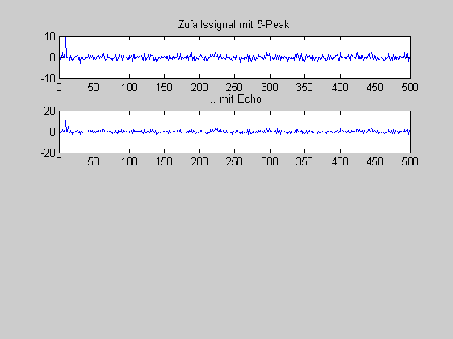

Contents
Inverses Filter
Im Laborversuch untersuchen Sie ein System zur inversen Filterung eines Echosignals. Bevor Sie starten, überprüfen Sie das Zahlenbeispiel Ihrer Vorbereitung. Danach modellieren Sie die Störung, und Sie untersuchen die Möglichkeiten einer Störunterdrückung durch ein inverses Filter.
(c) HSM. B.Wir 1.8.12
clear all; close all;
Zahlenbeispiel
Echoerzeugung
b=[1 0 0 0.5] % b=[1 0 0 0.8] % später für (iii) a=[1] % AR-Echokompensation b_inv = a a_inv = b % Test x =[1 0 0 2 0 0 0 0 0 0 ] y = filter(b,a,x) x_dach = filter(b_inv,a_inv,y) % Impulsantwort des inversens Systems g_inv = filter(b_inv,a_inv,[ 1 0 0 0 0 0 0 0 0 0]) % MA-Echokompensation b_inv_MA = g_inv a_inv_MA = 1 x_dach_MA = filter(b_inv_MA,a_inv_MA,y) %%(i) Modellierung der Störung % durch ein Zufallssignals x[k] und ein MA-Filter. Z = 500 % ...Werte x = randn(1,Z); x(10) = 10; y = filter(b,a,x); figure(1); subplot(4,1,1); plot(x); title('Zufallssignal mit \delta-Peak') subplot(4,1,2); plot(y); title('... mit Echo')
b =
1.0000 0 0 0.5000
a =
1
b_inv =
1
a_inv =
1.0000 0 0 0.5000
x =
1 0 0 2 0 0 0 0 0 0
y =
Columns 1 through 9
1.0000 0 0 2.5000 0 0 1.0000 0 0
Column 10
0
x_dach =
1 0 0 2 0 0 0 0 0 0
g_inv =
Columns 1 through 9
1.0000 0 0 -0.5000 0 0 0.2500 0 0
Column 10
-0.1250
b_inv_MA =
Columns 1 through 9
1.0000 0 0 -0.5000 0 0 0.2500 0 0
Column 10
-0.1250
a_inv_MA =
1
x_dach_MA =
1 0 0 2 0 0 0 0 0 0
Z =
500
 (ii) Signalrekonstruktion mit einem AR- bzw. MA-Filter
x_dach = filter(......); x_dach_MA = filter(.....); subplot(4,1,3); plot(x_dach); title('...nach inversem Filter'); hold on; plot(x_dach_MA,'k'); legend('AR','MA'); hold off;
e_AR = x-x_dach; e_m_AR = e_AR * e_AR'/length(e_AR) e_MA = x-x_dach_MA; e_m_MA = e_MA * e_MA'/length(e_MA)
subplot(4,1,4); plot(e_AR); title(['Rekonstruktionsfehler e^2_{AR} = ', num2str(e_m_AR), ' e^2_{MA}=' , num2str(e_m_MA)]); hold on; plot(e_MA,'k'); legend('AR','MA'); hold off;
%% (iii) Praktischer Einsatz
%% - Rauschen im Empfäger e_AR_werte = []; e_MA_werte = []; for r=1:1:100; %Rauschleistung in % y_r = y + ..... *randn(size(y));
foo = (x - filter(...)); e_AR = foo*foo'/length(foo); e_AR_werte = [e_AR_werte,e_AR];
foo = (x - filter(......)); e_MA = foo*foo'/length(foo); e_MA_werte = [e_MA_werte,e_MA];
end figure(2); subplot(2,2,1); plot(e_AR_werte); title('Empfängerrauschen'); xlabel('Rauschleistung in %'); ylabel('Rek.-fehler^2/Abtastwert'); hold on; plot(e_MA_werte,'k'); legend('AR', 'MA','location','best');
%% - Fehlerhafte Echohöhe e_AR_w = []; e_MA_w = [];
for f= -50:1:49; % Fehler in %
a_inv_f = a_inv + ......; a_inv_f(1) = 1; foo = (x - filter(1,a_inv_f,y)); e_AR = foo*foo'/length(foo); e_AR_w = [e_AR_w,e_AR];
b_inv_MA_f = b_inv_MA + b_inv_MA*f/100; b_inv_MA_f(1) = 1; foo = (x - filter(b_inv_MA_f,1,y)); e_MA = foo*foo'/length(foo); e_MA_w = [e_MA_w,e_MA];
end figure(2); subplot(2,2,2); plot( -50:1:49 ,e_AR_w); title('Fehlerhafte Echhöhe'); xlabel('Fehler in %'); ylabel('Rek.-fehler^2/Abtastwert'); hold on; plot(-50:1:49,e_MA_w,'k'); legend('AR', 'MA','location','best');
%% - Stabilität falls Echohöhe gegen 1 % Echohöhe unter (i) ändern % % Siehe dazu auch die PN-Diagramme für AR und MA. subplot(2,2,3); zplane(1,a_inv);title('AR-Filter') subplot(2,2,4); zplane(b_inv_MA,1);title('MA-Filter')